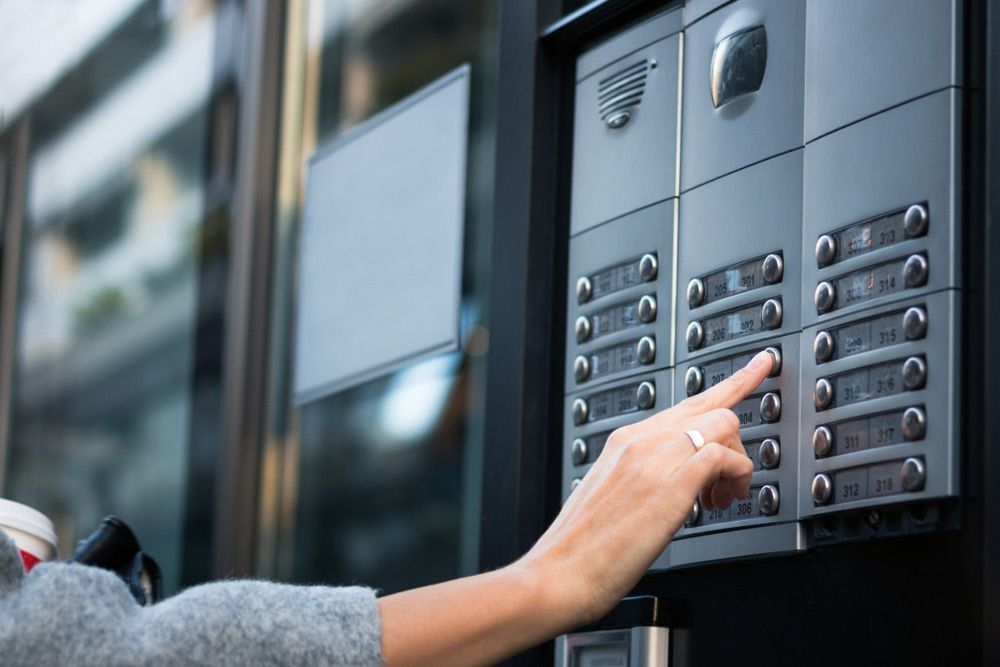
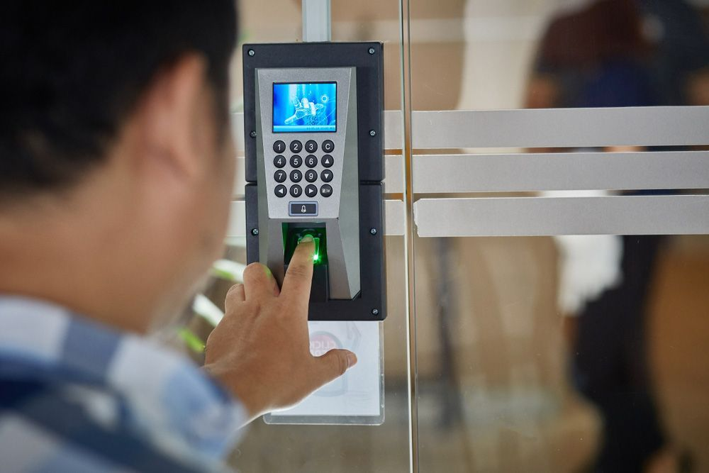
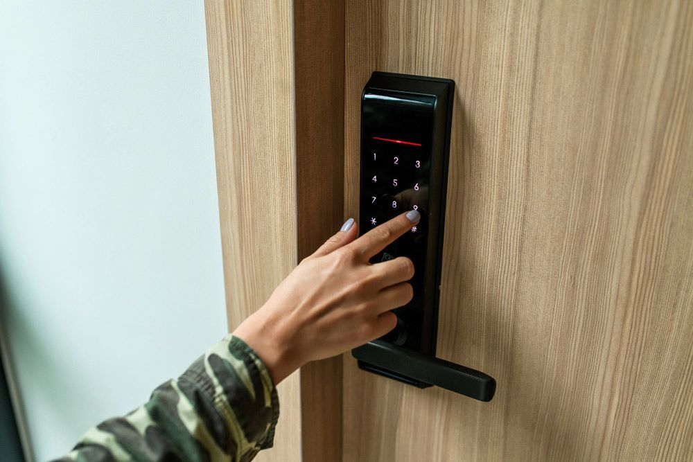

On this page
AT A GLANCE
Access control systems are a fundamental component in the security infrastructure of both residential and commercial properties.
Comprehensive Access Control Systems for Enhanced Security

Access control systems are a fundamental component in the security infrastructure of both residential and commercial properties. These systems provide the ability to control, monitor and restrict the movement of people, assets or vehicles in, out and around your building or site. This empowers property owners to manage who enters specific areas and at what times. From individual doors to complex networked systems, the right access control solution offers unparalleled protection and peace of mind.
Our selection of access control systems includes magnetic card readers and PIN code devices, all tailored to suit the level of security required for your property. Integration with CCTV and intercom systems can also be made seamless, offering a comprehensive security solution that safeguards your premises around the clock.
To discover how SPL Security Solutions can enhance the safety of your home or business with our tailored access control systems, call (07) 5588 8111. We also supply CCTV and security cameras, intercoms and alarms throughout the Gold Coast, Brisbane and Northern NSW.
Types of Access Control
The type of access control you select will depend on your security requirements and budget. Here are a few of the more popular options:
Card/Fob Access Control
- Card or fob access control systems operate by either presenting an RFID card or key fob to a reader, which then grants entry if authorised. This form of access control is widely used in commercial buildings as it provides an efficient means of entry for employees, contractors or visitors. Cards can be easily programmed to expire or grant access only during certain times.
PIN Code Access Control
- PIN code access control systems require the user to enter a numerical code to gain entry. These systems provide reliable protection for areas that don't require high-level security. PIN codes can be changed or deactivated easily, making them an ideal option for businesses that frequently have new employees or contractors visiting the premises.

Access Control Aftercare Services

The right access control system can enhance security and improve the efficiency of traffic, but only if it's correctly installed and maintained. At SPL Security Solutions, we believe the ongoing maintenance and support of our products are just as important as their installation, which is why we offer aftercare services to our customers. Choose us for:
- Software upgrades: Keep your access control systems up to date with the latest security features.
- 24/7 emergency support: Have peace of mind knowing we're available around the clock for urgent assistance.
- Adherence to Australian Standards: We strictly adhere to Australian Standards to ensure security is never compromised.
To find out more about our aftercare service or to organise a maintenance check on your security system, get in touch!
Frequently Asked Questions
-
How does an access control system work?
An access control system validates an individual’s identity through credentials like a card or PIN. Once the identity is validated against the pre-set permissions, the system will either grant or deny access. Access control systems don’t just limit access to physical areas; they can also protect digital assets like networks, files and data. Additionally, access control systems offer a pathway to automating your property for energy saving initiatives, allowing you to control lights, air conditioning and more.
-
Are access control systems easy to use and manage?
Despite their sophisticated technology, access control systems are designed to be user friendly. From the initial set up to daily operation, these systems typically have intuitive interfaces and clear instructions, making them easy to access. Users can manage access permissions, monitor activity and respond to security incidents with just a few clicks. Most systems also allow for changes to be made remotely, providing flexibility and convenience for managers and administrators. While access control systems are packed with advanced features and capabilities, you don’t need to be a tech expert to manage them effectively.
-
How much area does an access control system cover?
Access control systems are known for their scalability. These systems can be tailored to your specific needs, irrespective of the size or type of your facility. From small businesses with a single access point to large multi-site corporations, an access control system can cover areas of varying sizes. It’s not only about the number of doors either. The system can also regulate access to lifts, parking lots and any other areas you wish to secure.
-
What are the benefits of an access control system?
There are many advantages of having an access control system in your facility, making it an invaluable addition to your security framework. Most importantly, access control systems provide enhanced security, giving you control over who can access your facility and when. This greatly enhances your security, keeping unauthorised individuals out while ensuring the right people have access when they need it. By preventing unauthorised access, it reduces the likelihood of theft, vandalism or other security incidents. Employees and visitors alike can feel safe knowing access to the facility is carefully managed and monitored.
An access control system also allows for improved monitoring, offering valuable insights into the movement of people within your facility. This visibility can be instrumental for a variety of reasons such as investigating security incidents, improving operational efficiency or ensuring regulatory compliance. These systems are also very convenient, replacing traditional keys for a card or your fingerprint. Whether you want to boost security, gain better control or simply make life easier for everyone on site, an access control system is your solution to achieving all these and more.
-
Can an access control system be integrated with other security systems?
Absolutely. access control systems can often be integrated with a variety of other security systems like CCTV surveillance, intruder alarms and fire detection systems. This interconnectivity can create a holistic, robust security infrastructure. For instance, if an access control system denies entry to an individual, this event can trigger the surveillance system to focus on this area, giving you a comprehensive view of what’s happening. Similarly, integration with a fire detection system can enable automatic unlocking of all doors during an emergency, allowing for quick evacuation.
